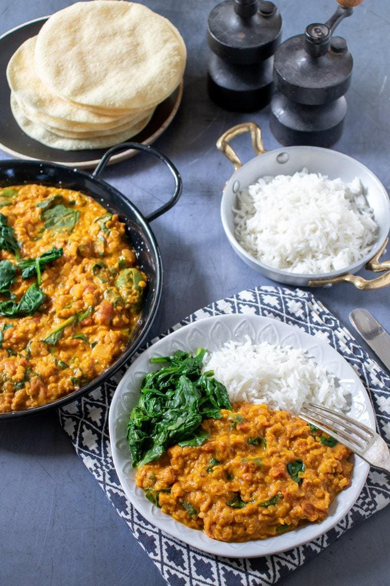

Sosovicovy dhal

Description
Easy Red Lentil Dhal is a must-try delicious, healthy and protein rich classic Indian dish!
With a prep time of 5 mins and cook time of 20 minutes it is a fast and flavor-full experience you have to try.
Ingredients
- 1-2 tbsp coconut or olive oil
- 2 chopped onions
- 4 minced garlic cloves
- 2 tsp minced ginger
- 1 tsp turmeric
- 1 tsp coriander
- 1 tsp cumin
- 1 tsp red paprika powder
- 1 tsp garam masala
- 1 and 2/3 cups (300 g) red lentils
- 3 and 1/4 cups (780 ml) vegetable broth
- 1 cup (240 ml) coconut milk
- 1 cup (240 ml) strained or chopped tomatoes
- salt and pepper to taste
- 2 tsp sugar to taste
- 2-3 tbsp lime or lemon juic to taste
Steps
- Heat oil in a skillet or a saucepan
- Add chopped onions and sauté for 2-3 minutes until translucent
- Add garlic and ginger and saute for another minute until fragrant
- Add spices and saute for a few seconds to unfold flavors
- Rinse lentils under cold running water and add to the onion and spices mixture
- Add broth and bring to a simmer
- Cook covered for 8-10 munites or until lentils absorbed most of the liquid
- Add coconut mil and tomatoes and simmer for another 5-10 minutes, until lentils are tented
- Season with salt, pepper, sugar and lime juice to taste
- Garnish dhal with a swirl of non-dairy yogurt, fresh chopped parsley or coriander and sesame seeds. Serve with rice or naan